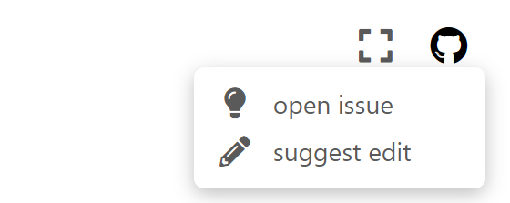

AnyBody Tutorials!#
{kind=link}
Tutorials for the AnyBody Modeling System
The Tutorials cover a wide range of topics and are a good place to start learning how to do musculoskeletal modeling in the AnyBody Modeling System.
You can find the available tutorials in the sidebar. The tutorials are ordered in a suitable sequence for new users who are unfamiliar with AnyBody, but this sequence may not be optimal for you depending on your background and interests.
It is recommended to start with the four Getting Started tutorials.
Other resources!#
- AnyScript forums
The Forum is a place to give and get help from other users. Get help and and learn from the experts.
- Wiki
The wiki has a wealth of information, tips&tricks and FAQs for working with the AnyBody Modeling System.
- AMMR documenation
Browse documentation on AMMR models and learn about possible settings
- The AnyBodyTech channel
AnyBody Technology Youtube channel watch webcasts and other videos
- AnyPyTools
AnyPyTools is a toolkit for working with the AnyBody Modeling System (AMS) from Python.
- GitHub repositories
The repositories on Github has large and small models under development. Download cutting edge models and join development.
Help make tutorials better!
We highly appreciate any contributions to Tutorials!
If you find typos, missing links or anything else wrong, don’t hesitate to fix it your self or report the problem. Just click the link header bar.
{kind=link}
More details are in the how to contribute section.